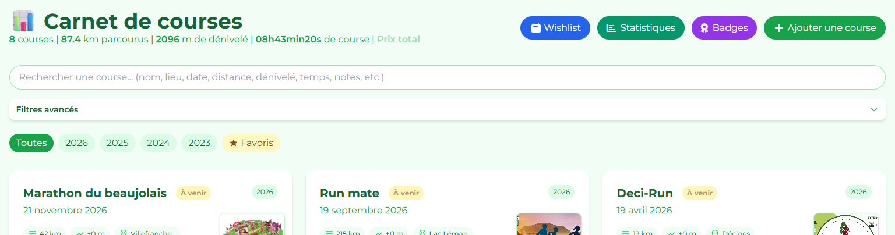
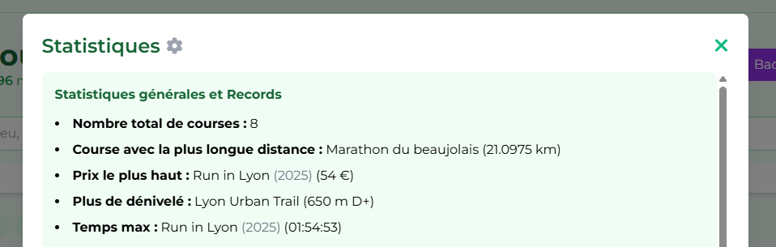

Introduction
Bienvenue sur Carnet de Courses, l'application ultime pour centraliser votre historique sportif. Que vous soyez coureur sur route, traileur ou triathlète, cette application vous permet de garder une trace précise de vos exploits, d'analyser vos performances et de planifier vos futurs défis.

Connexion & Inscription
Pour garantir la sécurité et la confidentialité de vos données, l'accès à l'application nécessite une authentification.
- Compte Personnel : Créez votre propre compte avec email et mot de passe pour enregistrer vos propres courses.
- Mode Invité : Utilisez l'identifiant "invite" (mot de passe fourni par l'administrateur) pour consulter les carnets publics sans pouvoir les modifier.
💡 Astuce
Le mode invité permet aux amis et à la famille de suivre vos exploits sans risquer de modifier vos données.
Tableau de Bord
Le tableau de bord est votre centre de commande. Il affiche l'ensemble de vos courses sous forme de cartes élégantes ou de liste, triées de la plus récente à la plus ancienne.
Les Cartes de Course
Chaque carte présente les informations essentielles en un coup d'œil :
- Nom et date de la course.
- Distance, dénivelé et lieu.
- Photo de couverture (si ajoutée).
- Badges spéciaux (ex: "New !", "Record").
Gestion des Courses
L'ajout d'une course est complet et intuitif. Cliquez sur le bouton "+" flottant pour ouvrir le formulaire.
Champs disponibles
- Nom & Date (obligatoires)
- Distance & Dénivelé
- Temps (h:m:s)
- Prix de l'inscription
- Photos & Plan du parcours
- Lien GPX & Site web
- Notes personnelles
- Accompagnants (coureurs/spectateurs)
Vous pouvez également modifier ou supprimer une course via les boutons présents sur chaque carte. (Nécessite d'être connecté et autorisé).
Détails & Souvenirs
En cliquant sur une course, vous accédez à la vue détaillée.
Galerie & Parcours
Visualisez vos souvenirs et le tracé de votre exploit en grand format.
Calculs Automatiques
L'application calcule automatiquement votre vitesse moyenne, votre allure (min/km) et même le coût par kilomètre parcouru !
Souvenirs (Anniversaires)
Une modale en bas à gauche de la page vous rappelle vos courses réalisées à la même date les années précédentes.
Recherche & Filtres
Retrouvez n'importe quelle course en un instant grâce à la barre de recherche intelligente. Elle scanne : nom, lieu, notes et même les dates.
Filtres Avancés
Utilisez l'accordéon de filtres pour affiner par :
Statistiques
Visualisez votre carrière sportive sous forme de données concrètes.
- Barre de statut : Totaux cumulés (Distance, Dénivelé, Temps total).
- Graphiques : Histogrammes des distances, dénivelés, et temps.
- Records : L'application met en évidence vos courses les plus longues, les plus pentues ou les plus rapides.

Wishlist
Ne perdez jamais de vue vos objectifs ! La Wishlist vous permet de lister les courses que vous rêvez de faire.
- Ajoutez des idées de courses rapidement.
- Assignez une catégorie (Route, Trail, Triathlon, Relai).
- Votez pour vos courses préférées pour les prioriser.
- Transformation : Une fois la course réalisée, transférez-la automatiquement dans votre carnet principal en un clic !